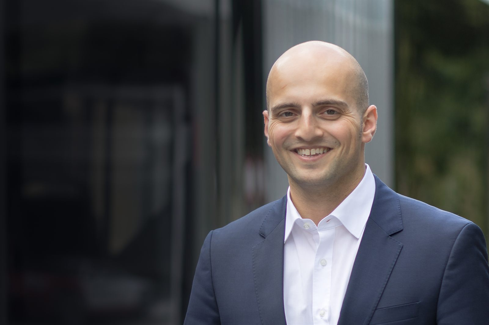

Soziale Gerechtigkeit
Solidarität und Toleranz gegenüber allen Mitmenschen — unabhängig von Herkunft und Religion.

Seit 2019 im Stadtparlament · Kommission Bildung, Sport und Kultur · Wiedergewählt am 8. März 2026 · Legislatur 2026–2030
Solidarität und Toleranz gegenüber allen Mitmenschen — unabhängig von Herkunft und Religion.
Bildung ist unser Rohstoff. Damit die Schweiz innovativ bleibt, müssen wir weiter in sie investieren.
Mehr Raum für Unternehmertum, Startups und die junge Generation in Winterthur.
Wer Erziehungsverantwortung übernimmt, soll finanziell entlastet werden — in Bildung, Sozialvorsorge, Kultur und Sport.
Halt geben, ankommen lassen — etwa mit Tagesstrukturen für in Winterthur ansässige Flüchtlinge.
Gutes Angebot, zeitgemässe Infrastruktur und private Initiativen für neue Sportanlagen.
Stimmen
Regierungsrätin Kanton Zürich
«André ist ein Gewinn für die Mitte und die Stadt Winterthur. Ich schätze sein Engagement für die Bildung im Kanton Zürich.»Alle Stimmen
Mitunterzeichnet: verbindliche Baureserven festlegen und die Stadtratsreserve aufheben.
Mitunterzeichnet: dringliche Fragen zum Rekurs gegen die Fahrplanänderung.
Mitunterzeichnet: Prüfauftrag für eine gerechtere Verteilung der städtischen Mittel im Sport.
Persönlich
Zehn direkte Antworten — so wie auf der bisherigen Website. Karate, Familienküche, Winterthur.